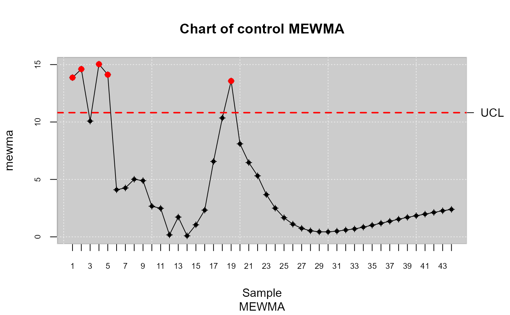

This function removes observations from the sample which violates the rules of a process under control.
Arguments
- x
Object mqcd (Multivariate Quality Control Statistical)
- control
A logical value indicating whether the initial sample comes from a process under control.
Examples
##
## Continuous data
##
library(qcr)
set.seed(356)
x <- matrix(rnorm(66),ncol=3)
x <- rbind(x,matrix(rexp(66,100),ncol=3))
dim(x)
#> [1] 44 3
x <-mqcd(x)
str(x)
#> 'mqcd' num [1:44, 1:3, 1] 0.306 -1.179 -0.322 -0.258 1.389 ...
#> - attr(*, "data.name")= chr " DATA"
#> - attr(*, "type.data")= chr "Multivariate"
x <-mqcs.mewma(x)
str(x)
#> List of 9
#> $ mqcd : 'mqcd' num [1:44, 1:3, 1] 0.306 -1.179 -0.322 -0.258 1.389 ...
#> ..- attr(*, "data.name")= chr " DATA"
#> ..- attr(*, "type.data")= chr "Multivariate"
#> $ type : chr "mewma"
#> $ statistics: num [1:44, 1] 13.9 14.6 10.1 15 14.1 ...
#> $ mean : num [1:3] 0.1665 0.0843 0.3165
#> $ S : num [1:3, 1:3] 0.6165 0.0546 0.0468 0.0546 0.6994 ...
#> $ lambda : num 0.1
#> $ limits : Named num [1:2] 0 10.8
#> ..- attr(*, "names")= chr [1:2] "lcl" "ucl"
#> $ data.name : chr " DATA"
#> $ violations: int [1:5] 1 2 4 5 19
#> - attr(*, "class")= chr [1:2] "mqcs.mewma" "mqcs"
plot(x)

data.mqcs <- mstate.control(x)
x <-mqcs.mewma(data.mqcs)
plot(x)